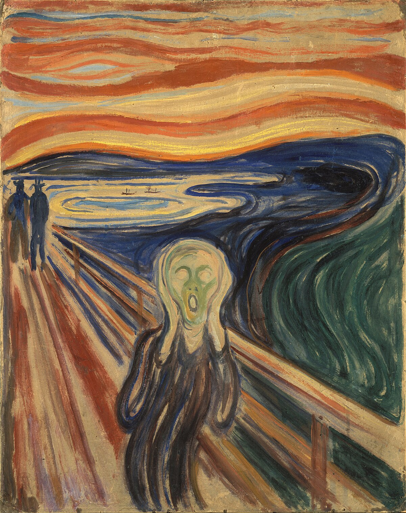
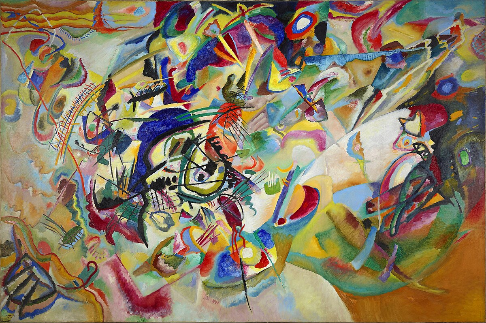
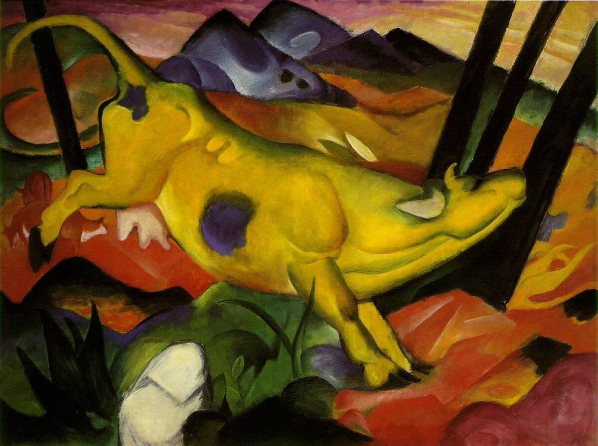
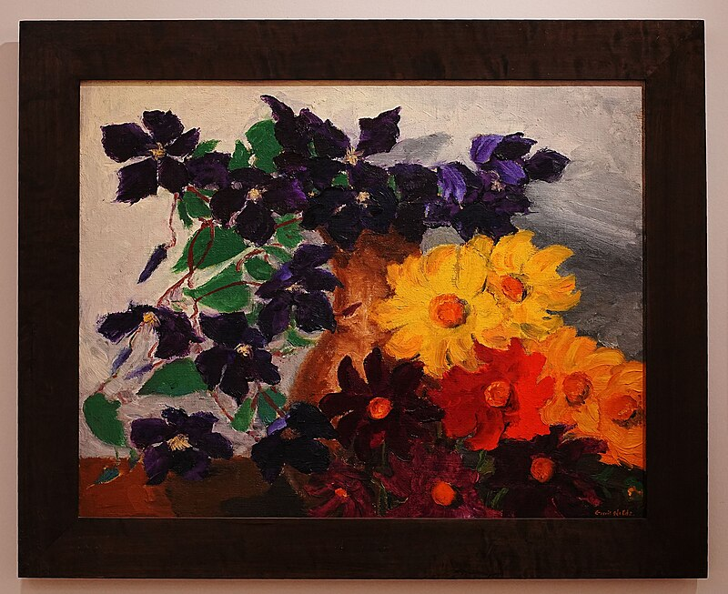

Meesterwerk: De Schreeuw
Edvard Munch, 1893

EXPRESSIONISME (1905-1930)
Tijdsgeest Context
🌍 POLITIEK PERSPECTIEF
Het Expressionisme (1905-1930) ontwikkelde zich in een politieke context van extreme crisis, oorlog en maatschappelijke ontwrichting die Europa fundamenteel veranderde. De politieke structuur werd gekenmerkt door de ondergang van de Duitse keizerrijk en de Oostenrijks-Hongaarse dubbelmonarchie, de opkomst van de Weimarrepubliek in Duitsland, de Russische Revolutie van 1917, en de geopolitieke herschikking na de Eerste Wereldoorlog. Duitsland, het centrum van het Expressionisme, werd geteisterd door hyperinflatie (1923), politieke instabiliteit, de opkomst van radicaal-rechtse en radicaal-linkse bewegingen, en een culturele crisis die kunstenaars zocht naar nieuwe vormen van expressie. De Eerste Wereldoorlog (1914-1918), die miljoenen levens eiste en de Europese samenleving ontwrichtte, was het centrale trauma dat de expressionistische kunst direct beïnvloedde. Vele expressionisten, waaronder Ernst Ludwig Kirchner, Franz Marc en Otto Dix, namen deel aan de oorlog en verwerkten hun ervaringen in hun kunst.
De sociale dynamiek werd gedomineerd door de gevolgen van de industrialisering en urbanisering die de traditionele sociale structuren hadden ontwricht. De grote steden - Berlijn, München, Dresden - werden centra van culturele innovatie maar ook van maatschappelijke ellende: armoede, prostitutie, criminaliteit, en mentale ontregeling. De expressionisten reageerden op deze moderne urbane realiteit met een kunst die de angst, vervreemding en existentiële crisis van de moderne mens verbeeldde. Tegelijkertijd ontwikkelde zich een bohémien cultuur van kunstenaarsgroepen (Die Brücke in Dresden, Der Blaue Reiter in München) die gezamenlijk werkten, exposeerden en theoriseerden. De opkomst van psychoanalyse (Sigmund Freud, Carl Jung) en de interesse in het onderbewuste, dromen en de menselijke psyche beïnvloedde de expressionistische zoektocht naar de 'binnenwereld' achter de uiterlijke schijn.
De economische context werd gekenmerkt door de naoorlogse chaos in Duitsland, waarbij hyperinflatie de besparingen van de middenklasse vernietigde en politieke radicalisering aanwakkerde. De Grote Depressie (vanaf 1929) versterkte de crisis en droeg bij aan de opkomst van het nationaalsocialisme. De expressionisten reageerden op deze economische ontwrichting met een kunst die de menselijke en maatschappelijke ellende verbeeldde: de uitbuiting van arbeiders, de prostitutie in de grote steden, de oorlogsinvaliden die door de straten zwierven, de mentale instorting van individuen onder de druk van de moderne tijd.
De verbinding tussen politiek en artistieke stijl was direct en bewust. Het Expressionisme's nadruk op subjectieve expressie, emotionele intensiteit en vervorming van de werkelijkheid was een directe reactie op de ervaring van oorlog, ontwrichting en existentiële angst. De schreeuwende kleuren, de hoekige vormen, de verstarde gezichten verbeeldden een wereld die uit balans was, een samenleving die haar menselijkheid was verloren. De expressionisten zochten naar de 'essentie' achter de oppervlakte, de 'innerlijke waarheid' die de materiële werkelijkheid verhulde. Deze zoektocht naar authenticiteit en spiritualiteit was zowel een revolte tegen de materialistische bourgeois-samenleving als een poging om nieuwe betekenis te vinden in een tijd van crisis. Het Expressionisme was daarmee niet slechts een artistieke beweging, maar een existentieel statement, een schreeuw om menselijkheid in een ontmenselijkte wereld.
Bronnen: Wikipedia - Expressionism, German Expressionism, Die Brücke, Der Blaue Reiter, World War I, Weimar Republic, Russian Revolution, Modernism.
📖 LITERAIR PERSPECTIEF
De literatuur van deze periode was even brutaal, vernieuwend en fundamenteel als de beeldende kunst van het Expressionisme. August Strindberg (1849-1912), de Zweedse dramaturg, schreef expressionistische toneelstukken die radicaal braken met de traditionele dramaturgie van het naturalisme en het symbolisme. *Ett drömspel* (Een droomspel, 1902) gebruikt de droomlogica als structuur: scènes vervloeien in elkaar, tijd en ruimte zijn vloeibaar, personages zijn symbolen eerder dan realistische individuen. Deze literaire techniek – de "stream of consciousness", de associatieve logica, de droomwereld – vond zijn visuele equivalent in de expressionistische schilderkunst die de buitenwereld vervormt om de innerlijke realiteit uit te drukken. Frank Wedekind (1864-1918) behandelde in zijn "Lulu"-cyclus (*Erdgeist*, 1895; *Die Büchse der Pandora*, 1904) schokkende thema's – prostitutie, lesbisch verlangen, moord, decadentie – met een nieuwe directheid die het burgerlijke taboe doorbrak. De literatuur en de schilderkunst van het Expressionisme deelden dezelfde doelstelling: het verstoren van de gevestigde orde, het zichtbaar maken van het verborgene, het uitspreken van het onuitsprekelijke. "Straat, Berlijn" (Ernst Ludwig Kirchner, 1913) vertoont parallellen met deze literaire moderniteit: twee vrouwen lopen door een Berlijnse straat, hun gezichten maskerachtig vervormd, hun poses ongemakkelijk theatraal, de hele compositie claustrofobisch en gespannen. Net als in Wedekinds toneelstukken zijn deze figuren geen realistische portretten, maar symbolen van de moderne stad – de prostitutie, de decadentie, de vervreemding. De hoekige, agressieve penseelstreken en de onnatuurlijke kleuren (giftig groen, fel oranje) verbeelden wat Wedekind in woorden uitdrukte: de onderstroom van geweld en seksualiteit die onder de burgerlijke façade schuilgaat.
In de poëzie brak het expressionistische manifest *Menschheitsdämmerung* (De schemering van de mensheid, 1919), samengesteld door Kurt Pinthus, met alle conventies van de lyriek. Dichters als Gottfried Benn (1886-1956) en Georg Heym (1887-1912) gebruikten vrije ritmes (geen rijm, geen vast metrum), schokkende beelden (lijkhuizen, steden in vlammen, apocalyptische visioenen), en een toon van urgentie en wanhoop die de naderende catastrofe van de Eerste Wereldoorlog voorspelde. Benns gedicht *Morgue* (1912), met zijn klinische beschrijvingen van lijken en medische procedures, brak taboes rond dood en ontbinding – net zoals de expressionistische schilders (zoals Munch in "De Schreeuw", 1893) de angst en de waanzin verbeeldden. "De Schreeuw" is zelf een visueel gedicht: de diagonale compositie, de organische lijnen, het contrast tussen de rode/oranje hemel en de blauw-groene fjord verbeelden de wereld die bezwijkt onder de existentiële angst. Munchs schilderij en Heyms gedichten delen dezelfde apocalyptische visie: het einde van de oude wereld, de ondergang van de burgerlijke beschaving, de komst van iets nieuws en verschrikkelijks. De figuur in "De Schreeuw" is de protagonist van het expressionistische gedicht: alleen, angstig, schreeuwend tegen een universum dat niet antwoordt.
Franz Kafka (1883-1924), hoewel later bekend dan zijn tijdgenoten, schreef in deze periode zijn eerste werken (*Das Urteil*, 1912; *Die Verwandlung*, 1915) die de literatuur fundamenteel zouden veranderen. Kafka's nachtmerrieachtige verhalen, waarin de werkelijkheid onlogisch en dreigend is, bureaucratie een ondoorgrondelijk monster, en het individu machteloos staat tegenover onzichtbare krachten, resoneren diep met de expressionistische kunst. "De Nacht" (Max Beckmann, 1918-1919) vertoont parallellen met Kafka's wereld: een claustrofobische ruimte vol geweld en waanzin, waar geen ontsnapping mogelijk is en geen logica heerst. Beckmanns donkere tinten, vertekende ruimte en scènes van wreedheid verbeelden wat Kafka in woorden beschreef: de nachtmerrie van de moderne existentie. De figuren in "De Nacht" – gemarteld, wanhopig, gevangen in een absurde wereld – zijn de personages uit Kafka's verhalen: slachtoffers van een systeem dat ze niet begrijpen, gevangen in een web van zinloos geweld.
Het expressionistische theater van Ernst Toller (1893-1939) en Georg Kaiser (1878-1945) verweerde het burgerlijke drama van het naturalisme en pleitte voor een nieuwe, abstracte vorm van theater. De toneelstukken zijn episodisch (geen continue handeling), symbolisch (personages zijn types, geen individuen), en politiek geladen (aanklachten tegen oorlog, kapitalisme, onrechtvaardigheid). Tollers *Die Wandlung* (De verandering, 1919) en Kaisers *Gas* (1918) gebruiken expressionistische middelen – vervorming, typisering, symboliek – om maatschappelijke boodschappen over te brengen. "Zelfportret als Soldaat" (Ernst Ludwig Kirchner, 1915) vertoont parallellen met dit expressionistische theater: Kirchner toont zichzelf niet als realistisch individu, maar als type – de getraumatiseerde soldaat, de gebroken kunstenaar, het slachtoffer van de oorlog. De symboliek (de afgehakte hand, het rode uniform, de giftige achtergrond) en de theatrale pose (stijf, rigide, starend) maken dit schilderij tot een toneelstuk in beeld, een visueel equivalent van Toller en Kaisers expressionistische drama's. De literatuur en de schilderkunst van het Expressionisme waren dus twee uitingen van dezelfde "Zeitgeist": dezelfde zoektocht naar nieuwe vormen, dezelfde afkeer van het naturalisme, dezelfde behoefte om de innerlijke wereld te verbeelden, dezelfde politieke urgentie. De dichters en de schilders lazen elkaars werk, bezochten dezelfde cafés en theaters, en deelden dezelfde visie op kunst als revolutionaire daad.
🧠 PSYCHOLOGISCH PERSPECTIEF
Het Expressionisme is diep geworteld in de Duitse Lebensphilosophie (levensfilosofie), een filosofische beweging die zich keerde tegen het wetenschappelijke positivisme en het mechanistische wereldbeeld van de 19e eeuw. Friedrich Nietzsche (1844-1900), in *Also sprach Zarathustra* (1883-1892) en andere werken, was de belangrijkste denker die de Expressionisten inspireerde. Zijn concept van de "Wille zur Macht" – een fundamentele drang naar expansie, creativiteit en zelfoverwinning die alle leven drijft – bood een alternatief voor zowel het christelijke moralisme als het materialistische determinisme. Nietzsches aanklacht tegen de "slaafse moraliteit" van het christendom, zijn viering van het "Übermensch" (bovenmens) die eigen waarden schept, en zijn profetie van de "Umwertung aller Werte" (herwaardering van alle waarden) resoneren diep in het expressionistische ideaal van de kunstenaar als visionair, als schepper van een nieuwe werkelijkheid. "De Toren van Blauwe Paarden" (Franz Marc, 1913) verbeeldt deze Nietzscheaanse spiritualiteit: vier paarden, hun lichamen vereenvoudigd tot architectonische vormen, hun manen en staarten wapperend in de wind, rijzen op naar een kristallijnen hemel. Marc, die Nietzsche las en bewonderde, zag in de dieren een pure, onbedorven levenskracht – een "Wille zur Macht" zonder de corruptie van de menselijke beschaving. De overheersende blauwe tinten (symbolisch voor het mannelijke, het spirituele, het ascetische) en de rood-oranje accenten (het vrouwelijke, het aardse, het zinnelijke) creëren een pantheïstische harmonie waarin de dieren één worden met de kosmos. De compositie, met de paarden als een toren die naar de hemel reikt, suggereert een spirituele opgang – de "Übermensch" als dier, ontsnapt aan de burgerlijke bekrompenheid.
Henri Bergson (1859-1941), de Franse filosoof van de "élan vital" (levensdrang), beïnvloedde vooral de Der Blaue Reiter kunstenaars. Bergson bekritiseerde het mechanistische, causale denken van de wetenschap en pleitte voor "intuïtie" als methode om de diepere realiteit van het leven te vatten. Zijn concept van "durée" (duur) – de subjectieve, kwalitatieve ervaring van tijd als continue stroom, niet als mechanische opeenvolging – vond zijn visuele equivalent in de expressionistische kunst die de innerlijke ervaring boven de buitenwereld plaatste. Wilhelm Dilthey (1833-1911) legde de nadruk op "Verstehen" (begrijpen) versus "Erklären" (verklaren): de menswetenschappen moeten de innerlijke betekenis van leven en cultuur vatten, niet causale wetten formuleren. Deze filosofische nadruk op subjectiviteit, innerlijkheid en betekenisgeving is de kern van het expressionisme.
Het existentialisme van Søren Kierkegaard (1813-1855) werd rond 1900 herontdekt en beïnvloedde Expressionisten met zijn nadruk op subjectiviteit, angst ("Furcht und Zittern"), en de radicale keuze. Kierkegaards idee dat waarheid subjectiviteit is, dat het individu moet kiezen voor het absurde (het geloof), en dat angst het besef is van oneindige vrijheid – dit alles resonant met de expressionistische zoektocht naar authenticiteit in een tijd van onzekerheid. "De Schreeuw" (Edvard Munch, 1893) is de perfecte visuele vertaling van deze existentialistische angst: een vervormde figuur op een brug, handen tegen de wangen, mond wijd open in een stille schreeuw, terwijl de lucht en het landschap meetrillen in de echo van deze existentiële noodkreet. Munch beschreef hoe hij tijdens een wandeling "de natuur hoorde schreeuwen" – een ervaring van "Angst" als fundamentele bestaansmodaliteit, niet als specifieke angst voor een object, maar als het besef van de leegte, de betekeloosheid, de absurditeit van het bestaan. De diagonale compositie (de brugleuning leidt het oog naar de figuur), de organische, vloeibare lijnen (de werkelijkheid lost op), en het contrast tussen de rode/oranje hemel en de blauw-groene fjord verbeelden de wereld die bezwijkt onder de existentiële angst.
De theosofie en andere esoterische stromingen (antroposofie, rozenkruisers) waren enorm populair onder Expressionisten, die zochten naar spirituele alternatieven voor het materialisme en positivisme van de 19e eeuw. Wassily Kandinsky (1866-1944), een van de belangrijkste Expressionisten, was diep beïnvloed door theosofie en schreef *Über das Geistige in der Kunst* (1911) – een manifest waarin hij de spirituele functie van kunst verdedigde. Kandinsky argumenteerde dat kleur en vorm een directe, innerlijke werking hebben op de ziel, onafhankelijk van de representatie van objecten. Zijn theorie van de "innerlijke noodzakelijkheid" stelde dat de kunstenaar niet de buitenwereld moet kopiëren, maar zijn innerlijke visie moet uitdrukken door middel van abstracte vormen en kleuren. "Compositie VII" (Kandinsky, 1913) is de ultieme toepassing van deze theosofische filosofie: een complex, bijna abstract schilderij vol organische vormen, kleurige vlekken en dynamische lijnen die geen herkenbare objecten voorstellen, maar een spirituele "klank" proberen weer te geven. Kandinsky zag kunst als een "weg naar het spirituele", analoog aan muziek (die ook geen objecten representeert maar direct het gevoel raakt), en hij noemde zijn schilderijen "composities" naar muzikale termen. De vloeiende overgangen tussen kleuren (rood naar blauw, geel naar groen), de wervelende compositie zonder duidelijk centrum, en de ambiguïteit tussen figuratie en abstractie verbeelden de theosofische zoektocht naar een hogere, spirituele realiteit achter de materiële schijn.
Franz Marc (1880-1916), een andere Der Blaue Reiter kunstenaar, ontwikkelde een eigen pantheïstische filosofie waarin dieren een directe verbinding hadden met de goddelijke natuur. Zijn schilderij "Gele Koe" (1911) toont een koe in een berglandschap, haar lichaam vereenvoudigd tot organische vormen, haar kleur onnatuurlijk geel (symbool voor het vrouwelijke, het zinnelijke, het aardse). Marc zag in de dieren een onbedorven onschuld, een "paradijselijke" toestand voor de zondeval van het menselijk bewustzijn. De felgele koe, omringd door blauwe bergen en rode bloemen, verbeeldt een harmonie die de mens verloren heeft – een pantheïstische eenheid van alle leven. Deze filosofische stromingen – Nietzscheïsme, Bergsonisme, existentialisme, theosofie – beïnvloedden niet alleen de thema's van het Expressionisme, maar ook de vorm: de vervorming (expressie van innerlijke waarheid boven uiterlijke realiteit), de anti-naturalistische kleuren (spirituele betekenis boven visuele correctheid), en de abstractie (weg van de materiële wereld naar het geestelijke ideaal).
⚙️ HISTORISCH PERSPECTIEF
De industriële stad explodeerde: Berlijn, Dresden en München groeiden explosief. De mens werd een radertje in de machine, wat leidde tot een gevoel van alienatie en vervreemding (Entfremdung). De psychoanalyse van Sigmund Freud (Traumdeutung, 1900) openbaarde het onderbewuste en de irrationele drijfveren van de mens - thema's die de Expressionisten fascineerden.
De koloniale expansie bracht "primitieve" kunst uit Afrika en Oceanië naar Europa. Deze maskers en beeldhouwwerken, met hun vervormde proporties en expressieve kracht, inspireerden de Expressionisten om afstand te doen van het naturalistische ideaal. Het Ethnologisches Museum in Dresden was een belangrijke bron van inspiratie voor Die Brücke.
Technologische veranderingen waren fundamenteel: de auto, de film, de telefoon veranderden de ervaring van tijd en ruimte. De stad werd een sensuele overlaad: neonreclames, trams, mensenmassa's. Dit alles werd verwerkt in de expressionistische kunst.
🎭 FILOSOFISCH PERSPECTIEF
De theosofie en andere esoterische stromingen (antroposofie, rozenkruisers) waren enorm populair onder Expressionisten, die zochten naar spirituele alternatieven voor het materialisme en positivisme van de 19e eeuw. Wassily Kandinsky (1866-1944), een van de belangrijkste Expressionisten, was diep beïnvloed door theosofie en schreef *Über das Geistige in der Kunst* (1911) – een manifest waarin hij de spirituele functie van kunst verdedigde. Kandinsky argumenteerde dat kleur en vorm een directe, innerlijke werking hebben op de ziel, onafhankelijk van de representatie van objecten. Zijn theorie van de "innerlijke noodzakelijkheid" stelde dat de kunstenaar niet de buitenwereld moet kopiëren, maar zijn innerlijke visie moet uitdrukken door middel van abstracte vormen en kleuren. "Compositie VII" (Kandinsky, 1913) is de ultieme toepassing van deze theosofische filosofie: een complex, bijna abstract schilderij vol organische vormen, kleurige vlekken en dynamische lijnen die geen herkenbare objecten voorstellen, maar een spirituele "klank" proberen weer te geven. Kandinsky zag kunst als een "weg naar het spirituele", analoog aan muziek (die ook geen objecten representeert maar direct het gevoel raakt), en hij noemde zijn schilderijen "composities" naar muzikale termen. De vloeiende overgangen tussen kleuren (rood naar blauw, geel naar groen), de wervelende compositie zonder duidelijk centrum, en de ambiguïteit tussen figuratie en abstractie verbeelden de theosofische zoektocht naar een hogere, spirituele realiteit achter de materiële schijn.
Franz Marc (1880-1916), een andere Der Blaue Reiter kunstenaar, ontwikkelde een eigen pantheïstische filosofie waarin dieren een directe verbinding hadden met de goddelijke natuur. Zijn schilderij "Gele Koe" (1911) toont een koe in een berglandschap, haar lichaam vereenvoudigd tot organische vormen, haar kleur onnatuurlijk geel (symbool voor het vrouwelijke, het zinnelijke, het aardse). Marc zag in de dieren een onbedorven onschuld, een "paradijselijke" toestand voor de zondeval van het menselijk bewustzijn. De felgele koe, omringd door blauwe bergen en rode bloemen, verbeeldt een harmonie die de mens verloren heeft – een pantheïstische eenheid van alle leven. Deze filosofische stromingen – Nietzscheïsme, Bergsonisme, existentialisme, theosofie – beïnvloedden niet alleen de thema's van het Expressionisme, maar ook de vorm: de vervorming (expressie van innerlijke waarheid boven uiterlijke realiteit), de anti-naturalistische kleuren (spirituele betekenis boven visuele correctheid), en de abstractie (weg van de materiële wereld naar het geestelijke ideaal).
De industriële stad explodeerde: Berlijn, Dresden en München groeiden explosief. De mens werd een radertje in de machine, wat leidde tot een gevoel van alienatie en vervreemding (Entfremdung). De psychoanalyse van Sigmund Freud (Traumdeutung, 1900) openbaarde het onderbewuste en de irrationele drijfveren van de mens - thema's die de Expressionisten fascineerden.
De koloniale expansie bracht "primitieve" kunst uit Afrika en Oceanië naar Europa. Deze maskers en beeldhouwwerken, met hun vervormde proporties en expressieve kracht, inspireerden de Expressionisten om afstand te doen van het naturalistische ideaal. Het Ethnologisches Museum in Dresden was een belangrijke bron van inspiratie voor Die Brücke.
Technologische veranderingen waren fundamenteel: de auto, de film, de telefoon veranderden de ervaring van tijd en ruimte. De stad werd een sensuele overlaad: neonreclames, trams, mensenmassa's. Dit alles werd verwerkt in de expressionistische kunst.
Literair Perspectief
De literatuur van deze periode was even brutaal, vernieuwend en fundamenteel als de beeldende kunst van het Expressionisme. August Strindberg (1849-1912), de Zweedse dramaturg, schreef expressionistische toneelstukken die radicaal braken met de traditionele dramaturgie van het naturalisme en het symbolisme. *Ett drömspel* (Een droomspel, 1902) gebruikt de droomlogica als structuur: scènes vervloeien in elkaar, tijd en ruimte zijn vloeibaar, personages zijn symbolen eerder dan realistische individuen. Deze literaire techniek – de "stream of consciousness", de associatieve logica, de droomwereld – vond zijn visuele equivalent in de expressionistische schilderkunst die de buitenwereld vervormt om de innerlijke realiteit uit te drukken. Frank Wedekind (1864-1918) behandelde in zijn "Lulu"-cyclus (*Erdgeist*, 1895; *Die Büchse der Pandora*, 1904) schokkende thema's – prostitutie, lesbisch verlangen, moord, decadentie – met een nieuwe directheid die het burgerlijke taboe doorbrak. De literatuur en de schilderkunst van het Expressionisme deelden dezelfde doelstelling: het verstoren van de gevestigde orde, het zichtbaar maken van het verborgene, het uitspreken van het onuitsprekelijke. "Straat, Berlijn" (Ernst Ludwig Kirchner, 1913) vertoont parallellen met deze literaire moderniteit: twee vrouwen lopen door een Berlijnse straat, hun gezichten maskerachtig vervormd, hun poses ongemakkelijk theatraal, de hele compositie claustrofobisch en gespannen. Net als in Wedekinds toneelstukken zijn deze figuren geen realistische portretten, maar symbolen van de moderne stad – de prostitutie, de decadentie, de vervreemding. De hoekige, agressieve penseelstreken en de onnatuurlijke kleuren (giftig groen, fel oranje) verbeelden wat Wedekind in woorden uitdrukte: de onderstroom van geweld en seksualiteit die onder de burgerlijke façade schuilgaat.
In de poëzie brak het expressionistische manifest *Menschheitsdämmerung* (De schemering van de mensheid, 1919), samengesteld door Kurt Pinthus, met alle conventies van de lyriek. Dichters als Gottfried Benn (1886-1956) en Georg Heym (1887-1912) gebruikten vrije ritmes (geen rijm, geen vast metrum), schokkende beelden (lijkhuizen, steden in vlammen, apocalyptische visioenen), en een toon van urgentie en wanhoop die de naderende catastrofe van de Eerste Wereldoorlog voorspelde. Benns gedicht *Morgue* (1912), met zijn klinische beschrijvingen van lijken en medische procedures, brak taboes rond dood en ontbinding – net zoals de expressionistische schilders (zoals Munch in "De Schreeuw", 1893) de angst en de waanzin verbeeldden. "De Schreeuw" is zelf een visueel gedicht: de diagonale compositie, de organische lijnen, de contrastrijke kleuren – alles is gericht op het overbrengen van één existentiële emotie, net zoals het expressionistische gedicht alles ondergeschikt maakt aan de emotionele uitbarsting. Munchs schilderij en Heyms gedichten delen dezelfde apocalyptische visie: het einde van de oude wereld, de ondergang van de burgerlijke beschaving, de komst van iets nieuws en verschrikkelijks. De figuur in "De Schreeuw" is de protagonist van het expressionistische gedicht: alleen, angstig, schreeuwend tegen een universum dat niet antwoordt.
Franz Kafka (1883-1924), hoewel later bekend dan zijn tijdgenoten, schreef in deze periode zijn eerste werken (*Das Urteil*, 1912; *Die Verwandlung*, 1915) die de literatuur fundamenteel zouden veranderen. Kafka's nachtmerrieachtige verhalen, waarin de werkelijkheid onlogisch en dreigend is, bureaucratie een ondoorgrondelijk monster, en het individu machteloos staat tegenover onzichtbare krachten, resoneren diep met de expressionistische kunst. "De Nacht" (Max Beckmann, 1918-1919) vertoont parallellen met Kafka's wereld: een claustrofobische ruimte vol geweld en waanzin, waar geen ontsnapping mogelijk is en geen logica heerst. Beckmanns donkere tinten, vertekende ruimte en scènes van wreedheid verbeelden wat Kafka in woorden beschreef: de nachtmerrie van de moderne existentie. De figuren in "De Nacht" – gemarteld, wanhopig, gevangen in een absurde wereld – zijn de personages uit Kafka's verhalen: slachtoffers van een systeem dat ze niet begrijpen, gevangen in een web van zinloos geweld.
Het expressionistische theater van Ernst Toller (1893-1939) en Georg Kaiser (1878-1945) verweerde het burgerlijke drama van het naturalisme en pleitte voor een nieuwe, abstracte vorm van theater. De toneelstukken zijn episodisch (geen continue handeling), symbolisch (personages zijn types, geen individuen), en politiek geladen (aanklachten tegen oorlog, kapitalisme, onrechtvaardigheid). Tollers *Die Wandlung* (De verandering, 1919) en Kaisers *Gas* (1918) gebruiken expressionistische middelen – vervorming, typisering, symboliek – om maatschappelijke boodschappen over te brengen. "Zelfportret als Soldaat" (Ernst Ludwig Kirchner, 1915) vertoont parallellen met dit expressionistische theater: Kirchner toont zichzelf niet als realistisch individu, maar als type – de getraumatiseerde soldaat, de gebroken kunstenaar, het slachtoffer van de oorlog. De symboliek (de afgehakte hand, het rode uniform, de giftige achtergrond) en de theatrale pose (stijf, rigide, starend) maken dit schilderij tot een toneelstuk in beeld, een visueel equivalent van Toller en Kaisers expressionistische drama's. De literatuur en de schilderkunst van het Expressionisme waren dus twee uitingen van dezelfde "Zeitgeist": dezelfde zoektocht naar nieuwe vormen, dezelfde afkeer van het naturalisme, dezelfde behoefte om de innerlijke wereld te verbeelden, dezelfde politieke urgentie. De dichters en de schilders lazen elkaars werk, bezochten dezelfde cafés en theaters, en deelden dezelfde visie op kunst als revolutionaire daad.
Filosofisch Perspectief
Het Expressionisme is diep geworteld in de Duitse Lebensphilosophie (levensfilosofie), een filosofische beweging die zich keerde tegen het wetenschappelijke positivisme en het mechanistische wereldbeeld van de 19e eeuw. Friedrich Nietzsche (1844-1900), in *Also sprach Zarathustra* (1883-1892) en andere werken, was de belangrijkste denker die de Expressionisten inspireerde. Zijn concept van de "Wille zur Macht" – een fundamentele drang naar expansie, creativiteit en zelfoverwinning die alle leven drijft – bood een alternatief voor zowel het christelijke moralisme als het materialistische determinisme. Nietzsches aanklacht tegen de "slaafse moraliteit" van het christendom, zijn viering van het "Übermensch" (bovenmens) die eigen waarden schept, en zijn profetie van de "Umwertung aller Werte" (herwaardering van alle waarden) resoneren diep in het expressionistische ideaal van de kunstenaar als visionair, als schepper van een nieuwe werkelijkheid. "De Toren van Blauwe Paarden" (Franz Marc, 1913) verbeeldt deze Nietzscheaanse spiritualiteit: vier paarden, hun lichamen vereenvoudigd tot architectonische vormen, hun manen en staarten wapperend in de wind, rijzen op naar een kristallijnen hemel. Marc, die Nietzsche las en bewonderde, zag in de dieren een pure, onbedorven levenskracht – een "Wille zur Macht" zonder de corruptie van de menselijke beschaving. De overheersende blauwe tinten (symbolisch voor het mannelijke, het spirituele, het ascetische) en de rood-oranje accenten (het vrouwelijke, het aardse, het zinnelijke) creëren een pantheïstische harmonie waarin de dieren één worden met de kosmos. De compositie, met de paarden als een toren die naar de hemel reikt, suggereert een spirituele opgang – de "Übermensch" als dier, ontsnapt aan de burgerlijke bekrompenheid.
Henri Bergson (1859-1941), de Franse filosoof van de "élan vital" (levensdrang), beïnvloedde vooral de Der Blaue Reiter kunstenaars. Bergson bekritiseerde het mechanistische, causale denken van de wetenschap en pleitte voor "intuïtie" als methode om de diepere realiteit van het leven te vatten. Zijn concept van "durée" (duur) – de subjectieve, kwalitatieve ervaring van tijd als continue stroom, niet als mechanische opeenvolging – vond zijn visuele equivalent in de expressionistische kunst die de innerlijke ervaring boven de buitenwereld plaatste. Wilhelm Dilthey (1833-1911) legde de nadruk op "Verstehen" (begrijpen) versus "Erklären" (verklaren): de menswetenschappen moeten de innerlijke betekenis van leven en cultuur vatten, niet causale wetten formuleren. Deze filosofische nadruk op subjectiviteit, innerlijkheid en betekenisgeving is de kern van het expressionisme.
Het existentialisme van Søren Kierkegaard (1813-1855) werd rond 1900 herontdekt en beïnvloedde Expressionisten met zijn nadruk op subjectiviteit, angst ("Furcht und Zittern"), en de radicale keuze. Kierkegaards idee dat waarheid subjectiviteit is, dat het individu moet kiezen voor het absurde (het geloof), en dat angst het besef is van oneindige vrijheid – dit alles resonant met de expressionistische zoektocht naar authenticiteit in een tijd van onzekerheid. "De Schreeuw" (Edvard Munch, 1893) is de perfecte visuele vertaling van deze existentialistische angst: een vervormde figuur op een brug, handen tegen de wangen, mond wijd open in een stille schreeuw, terwijl de lucht en het landschap meetrillen in de echo van deze existentiële noodkreet. Munch beschreef hoe hij tijdens een wandeling "de natuur hoorde schreeuwen" – een ervaring van "Angst" als fundamentele bestaansmodaliteit, niet als specifieke angst voor een object, maar als het besef van de leegte, de betekeloosheid, de absurditeit van het bestaan. De diagonale compositie (de brugleuning leidt het oog naar de figuur), de organische, vloeibare lijnen (de werkelijkheid lost op), en het contrast tussen de rode/oranje hemel en de blauw-groene fjord verbeelden de wereld die bezwijkt onder de existentiële angst.
De theosofie en andere esoterische stromingen (antroposofie, rozenkruisers) waren enorm populair onder Expressionisten, die zochten naar spirituele alternatieven voor het materialisme en positivisme van de 19e eeuw. Wassily Kandinsky (1866-1944), een van de belangrijkste Expressionisten, was diep beïnvloed door theosofie en schreef *Über das Geistige in der Kunst* (1911) – een manifest waarin hij de spirituele functie van kunst verdedigde. Kandinsky argumenteerde dat kleur en vorm een directe, innerlijke werking hebben op de ziel, onafhankelijk van de representatie van objecten. Zijn theorie van de "innerlijke noodzakelijkheid" stelde dat de kunstenaar niet de buitenwereld moet kopiëren, maar zijn innerlijke visie moet uitdrukken door middel van abstracte vormen en kleuren. "Compositie VII" (Kandinsky, 1913) is de ultieme toepassing van deze theosofische filosofie: een complex, bijna abstract schilderij vol organische vormen, kleurige vlekken en dynamische lijnen die geen herkenbare objecten voorstellen, maar een spirituele "klank" proberen weer te geven. Kandinsky zag kunst als een "weg naar het spirituele", analoog aan muziek (die ook geen objecten representeert maar direct het gevoel raakt), en hij noemde zijn schilderijen "composities" naar muzikale termen. De vloeiende overgangen tussen kleuren (rood naar blauw, geel naar groen), de wervelende compositie zonder duidelijk centrum, en de ambiguïteit tussen figuratie en abstractie verbeelden de theosofische zoektocht naar een hogere, spirituele realiteit achter de materiële schijn.
Franz Marc (1880-1916), een andere Der Blaue Reiter kunstenaar, ontwikkelde een eigen pantheïstische filosofie waarin dieren een directe verbinding hadden met de goddelijke natuur. Zijn schilderij "Gele Koe" (1911) toont een koe in een berglandschap, haar lichaam vereenvoudigd tot organische vormen, haar kleur onnatuurlijk geel (symbool voor het vrouwelijke, het zinnelijke, het aardse). Marc zag in de dieren een onbedorven onschuld, een "paradijselijke" toestand voor de zondeval van het menselijk bewustzijn. De felgele koe, omringd door blauwe bergen en rode bloemen, verbeeldt een harmonie die de mens verloren heeft – een pantheïstische eenheid van alle leven. Deze filosofische stromingen – Nietzscheïsme, Bergsonisme, existentialisme, theosofie – beïnvloedden niet alleen de thema's van het Expressionisme, maar ook de vorm: de vervorming (expressie van innerlijke waarheid boven uiterlijke realiteit), de anti-naturalistische kleuren (spirituele betekenis boven visuele correctheid), en de abstractie (weg van de materiële wereld naar het geestelijke ideaal).
Psychologisch Perspectief
Het Expressionisme is in essentie een psychologische kunststroming – misschien wel de eerste moderne kunstbeweging die de psychologie niet alleen als thema gebruikte, maar als fundamentele methode. Niet de buitenwereld wordt afgebeeld zoals het oog die ziet, maar de innerlijke wereld – de emoties, angsten, verlangens en trauma's van de kunstenaar – zoals de ziel die ervaart. Dit sluit nauw aan bij de psychoanalyse van Sigmund Freud (1856-1939), wiens *Die Traumdeutung* (De droomduiding, 1900) het onderbewuste, de verdrongen wensen en de irrationele drijfveren van de mens openbaarde als de eigenlijke motoren van het gedrag. Freuds theorie over het id (het onbewuste, driftleven), het ego (het bewuste ik) en het superego (het geweten, de maatschappelijke normen) bood een model voor de psychische conflicten die Expressionisten in hun werk uitbeeldden. De droomwereld, die Freud als de "koninklijke weg naar het onbewuste" zag, werd een belangrijk thema in de expressionistische kunst: de surreële vervormingen, de nachtmerrieachtige scènes, de logica die plaatsmaakt voor associatie en emotie.
"De Schreeuw" (Edvard Munch, 1893) is het icoon van de expressionistische psychologie: een vervormde figuur op een brug, handen tegen de wangen, mond wijd open in een stille schreeuw, terwijl de omgeving meetrilt in een golvend patroon dat de psychologische resonantie van de angst verbeeldt. Munch beschreef de ervaring: "Ik voelde een oneindige schreeuw door de natuur gaan." Dit is existentiële angst – niet de angst voor een specifiek gevaar, maar de fundamentele angst voor het bestaan zelf, wat Freud later "Angst" zou noemen. De diagonale compositie (de brugleuning leidt het oog naar de figuur), de organische, vloeibare lijnen (de werkelijkheid lost op onder de druk van de emotie), en het contrast tussen de rode/oranje hemel (de kleur van angst, passie, bloed) en de blauw-groene fjord (de kleur van melancholie, kalmte) verbeelden de psychologische toestand van de protagonist. Het gezicht, dat bijna oplost in een schedelachtige vorm, de handen die de wangen omklemmen in een gebaar van pure wanhoop, en de ogen die staren in de leegte – dit is de psychologie van de moderne mens: geïsoleerd, angstig, geconfronteerd met de betekeloosheid van het bestaan.De kunstenaar als medium, als profeet, als genezer van de samenleving – dit is de expressionistische visie die parallellen vertoont met de psychoanalytische opvatting van de kunstenaar als iemand die toegang heeft tot het collectieve onbewuste. De vervorming van de werkelijkheid is geen artistieke concessie aan het modieuze, maar een noodzaak: alleen door radicale vervorming kan de ware, innerlijke werkelijkheid worden uitgedrukt. "Straat, Berlijn" (Ernst Ludwig Kirchner, 1913) demonstreert deze psychologische methode: twee vrouwen lopen door een Berlijnse straat, hun gezichten maskerachtig vervormd met scherpe hoeken en onnatuurlijke tinten (giftig groen, fel oranje, diepblauw). De hoekige, agressieve penseelstreken, de claustrofobische compositie (de figuren worden geperst in de beeldruimte), en de ongemakkelijke psychologische spanning tussen de personages verbeelden de vervreemding van de moderne mens in de metropool. Kirchner, die leed aan depressies en angstneurosen, gebruikte de vervorming om zijn eigen psychologische toestand uit te drukken: de angst voor de anonimiteit van de stad, de spanning tussen individu en massa, het gevoel van isolement temidden van duizenden mensen. De mannen op de achtergrond, silhouetten zonder individuele trekken, verbeelden de psychologische fenomenen van "depersonalisatie" en "derealisatie" – het gevoel dat anderen geen echte personen zijn, maar slechts schimmen in een nachtmerrie.
De interesse in psychiatrie en waanzin was niet toevallig maar essentieel voor het Expressionisme. Vele kunstenaars bezochten psychiatrische inrichtingen om patiënten te observeren, en de grens tussen genialiteit en waanzin was dun – zowel in de artistieke praktijk als in het publieke discours. "Zelfportret als Soldaat" (Ernst Ludwig Kirchner, 1915) is een directe weergave van oorlogsneurose (wat later PTSD zou worden genoemd): Kirchner toont zichzelf in uniform, zijn rechterhand afgehakt (een symbolische verwijzing naar zijn psychische verwonding, zijn onvermogen om nog te schilderen), zijn gezicht vervormd door angst en shock. De felrode uniform (de kleur van bloed, geweld, trauma), de giftige groene achtergrond (de kleur van ziekte, verval, gal), en de hoekige, bijna kubistische compositie verbeelden de psychologische desintegratie van de kunstenaar-soldaat. Kirchner, die in 1914 vrijwillig dienst nam maar al snel instortte en naar een sanatorium werd gestuurd, verwerkte zijn trauma in dit schilderij – een vorm van "kunsttherapie" avant la lettre. De grote ogen, starend in de verte, de open mond (echo van Munchs "Schreeuw"), en de rigide, houterige pose verbeelden de "freezing" reactie van het getraumatiseerde psyche.
De post-oorlogse trauma's werden ook verwerkt in "De Nacht" (Max Beckmann, 1918-1919), een claustrofobische scènes vol geweld, marteling en waanzin. Beckmann, die als verpleger aan het front diende en de gruwelen van de oorlog van nabij meemaakte, schilderde deze nachtmerrie als een getuigenis van zijn psychische wonden. De donkere, picturale tinten (bruinen, zwarten, roestkleuren), de vertekende ruimte (geen enkel perspectief, alles dicht op elkaar geperst), en de scènes van wreedheid en absurditeit verbeelden de posttraumatische stress van een generatie. De psychologie van het Expressionisme is dus niet alleen een kwestie van thema's, maar van methode: de vervorming, de kleur, de compositie zijn allemaal psychologische instrumenten om de innerlijke wereld zichtbaar te maken.
De expressionistische belangstelling voor psychiatrie en waanzin manifesteerde zich ook in de interesse voor "primitieve" toestanden – het kindlijke, het dierlijke, het onbedorvene – die Emile Nolde in zijn bijbelse taferelen met extatische intensiteit verbeeldde. "Vrouw met een Hoed" (Henri Matisse, 1905), hoewel niet strikt expressionistisch, toont dezelfde psychologische bevrijding: een vrouw met een grote hoed, haar gezicht geschilderd in onnatuurlijke tinten (groen op de neus, roze op de wang, blauw op de kin), haar blik direct en uitdagend. Matisse's abrupte breuk met het naturalisme (de kleuren zijn niet wat ze "moeten" zijn) verbeeldt een psychologische bevrijding van de conventies, een terugkeer naar de spontaniteit en emotionaliteit van het kind. De losse, zichtbare penseelstreken en het "onafgemaakte" aspect van het schilderij suggereren een psychische directheid – de kunstenaar schildert niet wat hij ziet, maar wat hij voelt.
---
Stijlfiguren en Thema's
Kenmerkende Vormen
Het Expressionisme kenmerkt zich door vervorming en vereenvoudiging. Menselijke figuren worden uitgerekt, gecomprimeerd, of gehoekt - alles dient de emotionele expressie. Het perspectief is vaak verstoord, de ruimte is claustrofobisch of juist oneindig leeg.
De lijn is belangrijker dan het volume: scherpe, hoekige contourlijnen omlijsten vlakken van pure kleur. Deze "cloisonné"-techniek (gescheiden kleurvlakken) is geleend van de Art Nouveau en de "primitieve" kunst.
Kleurenpalet
Het Expressionistische palet is intens en anti-naturalistisch. Kleuren worden niet gekozen naar werkelijkheid, maar naar emotionele lading. Fel rood voor passie of geweld, diep blauw voor melancholie, giftig groen voor ziekte of decadentie.
Ernst Ludwig Kirchner en Die Brücke gebruiken hoogverzadigde, complementaire kleuren (rood tegen groen, blauw tegen oranje) voor maximale visuele spanning. Der Blaue Reiter, met Kandinsky en Marc, is meer geïnteresseerd in de spirituele en muzikale kwaliteiten van kleur.
Technieken
Olieverf wordt dik aangebracht (impasto) met zichtbare, agressieve penseelstreken. De hand van de kunstenaar is overal zichtbaar - dit is geen illusionistische "venster naar de wereld".
De houtsnede wordt herontdekt als medium: de grove lijnen, het contrast tussen zwart en wit, de primitive kracht van het mes in het hout - dit alles sluit perfect aan bij expressionistische idealen.
Centrale Thema's
1. De moderne stad - als bron van alienatie en opwinding
2. Het naakt - de "nieuwe mens", onverhuld en authentiek
3. Oorlog en geweld - als traumatische ervaring
4. Spiritualiteit - zoeken naar verlossing door kunst
5. Primitivisme - terug naar de oorsprong
6. Apocalyps - het einde van de oude wereld
---
De Tien Meest Invloedrijke Werken
1. "De Schreeuw" (1893) — Edvard Munch
Munch schilderde meerdere versies van dit meesterwerk tussen 1893 en 1910. Het beeld ontstond tijdens een wandeling bij zonsondergang toen Munch een "oneindige schreeuw door de natuur" voelde. Het schilderij toont een vervormde figuur op een brug, handen tegen de wangen, mond wijd open in een stille schreeuw.
Tijdsgeest VertalingDit is angst verbeeld - niet als specifieke dreiging, maar als existentiële toestand. De moderne mens, alleen op een brug, geconfronteerd met de leegte van het universum. Munch noemde dit "de leegte die overal wacht." Het werk voorspelt de 20e eeuw: de oorlogen, de massavernietiging, het gevoel van onthechting.
StijlanalyseDe compositie is een diagonale wig: de brugleuning leidt het oog naar de schreeuwende figuur. De lijnen zijn organisch en vloeiend, bijna vloeibaar - de werkelijkheid lost op. Het kleurenpalet is beperkt maar intens: de rode/oranje hemel tegen de blauw-groene fjord creëert een maximale spanning. Munch gebruikte pastel en tempera over olieverf, wat een ruwe textuur geeft.
---
2. "Straat, Berlijn" (1913) — Ernst Ludwig Kirchner

Kirchner, een van de oprichters van Die Brücke, schilderde dit werk tijdens zijn verblijf in Berlijn. De stad fascineerde en verontrustte hem tegelijk: de snelle bewegingen, de anonimiteit, de gevaarlijke spanning van het moderne leven. Het schilderij toont een typische Berlijnse straat met hoeren en hun potentiële klanten.
Tijdsgeest VertalingDit is de moderne stad als nachtmerrie. De figuren zijn als marionetten, mechanisch bewegend in een decor van neon en asfalt. Het is de Entfremdung (vervreemding) verbeeld: mensen zijn dicht bij elkaar maar volledig geïsoleerd. Het thema van de prostituee is dubbelzinnig: zowel symbool van de vercommercialisering van het lichaam als van de bevrijding van burgerlijke moraal.
StijlanalyseDe compositie is een wirwar van diagonale lijnen en scherpe hoeken. De figuren zijn als marionetten, met starre, maskerachtige gezichten. Het kleurenpalet is intens: felle roden en groenen, met zwarte contourlijnen die alles bijeenhouden. Kirchners penseelvoering is nerveus en agressief.
---
3. "Compositie VII" (1913) — Wassily Kandinsky

Kandinsky's meesterwerk, geschilderd in München net voor de Eerste Wereldoorlog. Het is een van zijn laatste grote werken voor hij terugkeerde naar Rusland. Het thema is volgens Kandinsky zelf "Wederopstanding, het oordeel, en het einde van de wereld" - apocalyptische thema's die resoneren met de dreigende oorlog.
Tijdsgeest VertalingDit is de apocalyps van de oude wereld verbeeld, maar ook de geboorte van een nieuwe. De chaotische vormen en kleuren suggereren zowel vernietiging als schepping. Het is Kandinsky's theosofische visie: de materiële wereld lost op in het spirituele. Het werk reflecteert de pre-revolutionaire spanning in Rusland en het algemene cultuurpessimisme van de tijd.
StijlanalyseDe compositie is complex en veellagig: vormen lijken te zweven, te botsen, te transformeren. Er zijn herkenbare elementen (ruiters, bergen, water), maar ze zijn opgelost in een algehele beweging. Het kleurenpalet is intens: warme roden en gele, koele blauwen. Kandinsky's techniek is subtiel: dunne lagen, glazes.
---
4. "De Toren van Blauwe Paarden" (1913) — Franz Marc

Franz Marc, medeoprichter van Der Blaue Reiter, schilderde dit meesterwerk in het laatste jaar van zijn leven. Marc zag dieren als puurder en meer spiritueel dan mensen. Paarden waren zijn favoriete onderwerp: "Het paard is het meest volmaakte wezen van allemaal." Het schilderij toont vier paarden in verschillende kleuren gestapeld in een torenachtige compositie.
Tijdsgeest VertalingMarc's kleuren waren niet decoratief maar spiritueel geladen: blauw voor mannelijkheid en spiritualiteit, geel voor vrouwelijke vreugde, rood voor zwaarte. Dit was zijn poging om een nieuwe, universele taal te creëren. Het werk reflecteert de theosofische interesse van Der Blaue Reiter: de materiële wereld is slechts een gordijn voor een hogere realiteit.
StijlanalyseDe compositie is verticaal en symmetrisch: de paarden vormen een toren van kleur. De vormen zijn vereenvoudigd en gecurveerd, met vloeiende lijnen. Het kleurenpalet is intens en harmonieus: diepe blauwen, warme gele, en accenten van rood. Marc's penseelvoering is glad en precies.
---
5. "Gele Koe" (1911) — Franz Marc

Een van Marc's meest vrolijke en optimistische werken. De gele koe danst en springt over een groen-blauw landschap. Het schilderij ademt vreugde, levenslust, en een bijna mystieke verbinding met de natuur. Marc zag dieren als dichter bij de oorsprong van het leven dan mensen.
Tijdsgeest VertalingDit schilderij staat in schril contrast met de groeiende militarisering en industrialisering van Duitsland. Het is een utopische visie van harmonie tussen mens, dier, en natuur - een visie die door de Eerste Wereldoorlog zou worden vernietigd. Marc's kleuren zijn spiritueel: geel voor vrouwelijke warmte, blauw voor mannelijke spiritualiteit.
StijlanalyseDe compositie is dynamisch en bijna abstract: de koe vult het hele schilderij, haar vormen zijn gecurveerd en vloeiend. De perspectief is verstoord. Het kleurenpalet is helder en harmonieus: felle gele, diepe blauwen, en levendige groenen. Marc's penseelvoering is glad en precies.
---
6. "Dance Hall Bellevue" (1909-1910) — Ernst Ludwig Kirchner

Kirchner schilderde dit werk tijdens zijn periode in Dresden, voor hij naar Berlijn verhuisde. Het toont een drukke danszaal vol mensen die dansen en feesten. De danszaal Bellevue was een bekende uitgaansgelegenheid in Dresden. Het schilderij vangt de energie en hectiek van het moderne stadsleven.
Tijdsgeest VertalingDit werk toont de dubbelzinnigheid van het moderne leven: enerzijds de opwinding en sensatie van de grote stad, anderzijds de vervreemding en anonimiteit. De dansers zijn als marionetten, mechanisch bewegend in een decor van neon en asfalt. Het is de Entfremdung (vervreemding) verbeeld in een setting van vermaak.
StijlanalyseDe compositie is een wirwar van diagonale lijnen en scherpe hoeken. De figuren zijn uitgerekt en vervormd, met maskerachtige gezichten. Het kleurenpalet is intens: felle roden, groenen, en gele, met zwarte contourlijnen. Kirchners penseelvoering is nerveus en agressief - je voelt de adrenaline van de kunstenaar.
---
7. "Zelfportret als Soldaat" (1915) — Ernst Ludwig Kirchner

Kirchner schilderde dit zelfportret tijdens zijn militaire dienst in de Eerste Wereldoorlog. Hij was in zenuwinzinking geraakt (PTSD) en had geprobeerd om zelfmoord te plegen door in zijn pols te snijden. Het schilderij toont hem in uniform, met een afgehakte hand, starend naar de kijker met holle ogen.
Tijdsgeest VertalingDit is de traumatische werkelijkheid van de moderne oorlog verbeeld. Niet heroïsche veldslagen, maar de ineenstorting van de menselijke geest. De afgehakte hand is symbolisch: het betekent dat hij niet meer kan schilderen, dat de oorlog zijn kunstenaarschap heeft vernietigd. Het reflecteert de groeiende kritiek op de militarisering.
StijlanalyseDe compositie is frontaal en confrontatieel: de soldaat Kirchner staart ons aan, beschuldigend en angstig tegelijk. Het uniform is nauwkeurig geschilderd, maar het gezicht is vervormd, bijna maskerachtig. Het kleurenpalet is grimmig: bruinen, groenen, en een enkele felle rode accent.
---
8. "De Nacht" (1918-1919) — Max Beckmann
Beckmann schilderde dit meesterwerk in de nasleep van de Eerste Wereldoorlog. Het toont een claustrofobische hotelkamer waar een familie lijdt: een man hangt vast aan de gordijnen, een vrouw wordt vastgebonden, een kind huilt. Beckmann, die als genezer had gediend in de oorlog, had de gruwelen van het front gezien.
Tijdsgeest VertalingDit is de burgerlijke orde ontmaskerd. Niet de oorlog is de grootste gruwel, maar de "normaliteit" waarnaar men terugkeert. De Expressionisten hadden de samenleving willen veranderen, maar de oorlog had hun idealen verraden. Het schilderij reflecteert de toenemende pessimisme van de late Expressionisten.
StijlanalyseDe compositie is een claustrofobische kooi: de lijnen van het bed, de gordijnen, de tafel vormen een gevangenis. De figuren zijn vervormd, bijna grotesk. Het kleurenpalet is donker en grimmig: bruinen, zwarten, en enkele felle accenten van rood en groen. De ruimte is plat, zonder diepte.
---
9. "De Verleiding van de Heiligen" (1909) — Emil Nolde

Emil Nolde, een van de belangrijkste Expressionisten, schilderde dit werk in 1909. Het toont een religieuze scène waarin heiligen worden verleid door demonische figuren. Nolde was gefascineerd door bijbelse thema's en gaf ze een expressionistische, bijna extatische intensiteit. De felle kleuren en vervormde figuren verbeelden de spirituele strijd tussen goed en kwaad.
Tijdsgeest VertalingDit schilderij weerspiegelt de expressionistische zoektocht naar spirituele diepgang in een tijd van materialisme. De verleidingsscène is een metafoor voor de moderne mens die worstelt met morele keuzes in een wereld die zijn waarden verliest. Nolde's intensieve kleurenpalet symboliseert de hartstocht en de innerlijke strijd.
StijlanalyseDe compositie is dynamisch en chaotisch, met vervormde figuren die bijna dansen in een ruimte zonder duidelijke perspectief. Het kleurenpalet is intens: diepe roden, giftige groenen, en heldere gele accenten. Nolde's penseelvoering is dik en agressief, met zichtbare impasto-techniek.
---
10. "Het Grote Stadslandschap" (1913-1914) — Ernst Ludwig Kirchner

Kirchner's meesterwerk uit zijn Berlijnse periode toont de moderne metropool in al zijn chaotische glorie. De compositie is een wirwar van diagonale lijnen: straten, trams, gebouwen, en mensenmassa's bewegen zich door elkaar. Het werk vangt de energie, de angst, en de opwinding van het moderne stadsleven.
Tijdsgeest VertalingDit schilderij is de ultieme verbeelding van de expressionistische stad: niet als harmonisch geheel, maar als fragmentarische, verontrustende ervaring. De vervormde architectuur, de onnatuurlijke kleuren, en de claustrofobische compositie symboliseren de Entfremdung (vervreemding) van de moderne mens. Het is een visuele aanklacht tegen de dehumaniserende effecten van urbanisatie en industrialisatie.
StijlanalyseDe compositie is radicaal asymmetrisch en dynamisch, met meerdere verdwijnpunten die de kijker desoriënteren. Het kleurenpalet is intens en contrasterend: felrode daken, giftige groene straten, diepe blauwe lucht. Kirchner's penseelvoering is agressief en expressief, met dikke verflagen die de emotionele intensiteit benadrukken.